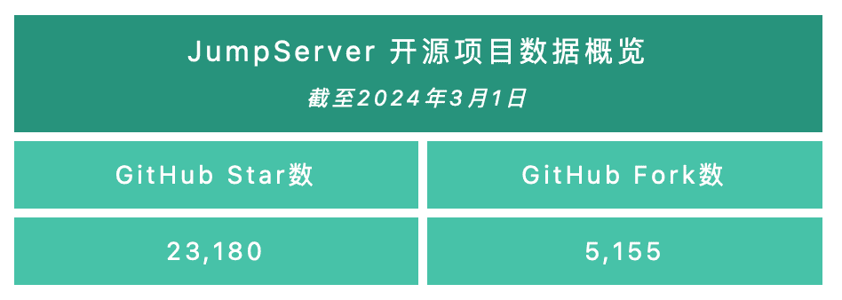
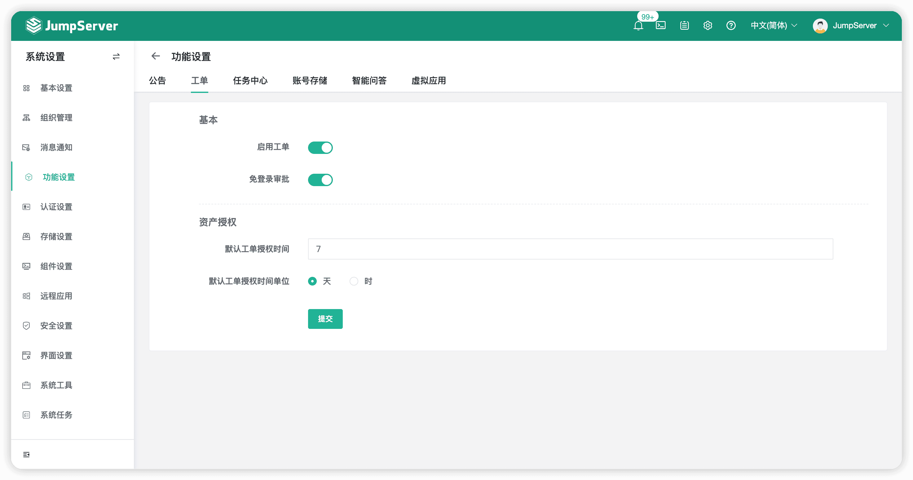
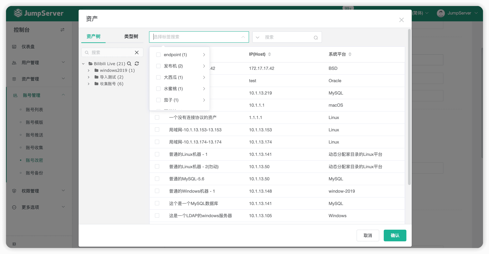

2024年3月4日，JumpServer开源堡垒机正式发布v3.10.4 LTS版本。JumpServer开源项目组将对v3.10 LTS版本提供长期的支持和优化，并定期迭代发布小版本。欢迎广大社区用户升级至v3.10 LTS最新版本，以获得更佳的使用体验。
在v3.10.4 LTS版本中，JumpServer账号管理模块支持批量测试资产的可连接性，支持批量更新资产的账号属性，同时账号模版新增导入/导出功能，提高了管理员对账号的批量管理能力。
X-Pack增强包方面，JumpServer的工单审批功能支持配置免密审批，免去了管理员审批工单时重复登录的步骤；在账号任务方面（账号改密、账号推送任务），这一版本的JumpServer支持用户通过标签的方式选择资产，进一步简化流程操作，提升了工作效率。
新增功能
1. 支持使用“win_shell”模块执行快捷命令
在JumpServer v3.10.4 LTS版本中，支持使用“win_shell”模块执行快捷命令。
当用户在“工作台”→“作业中心”→“快捷命令”页面中选择Windows类型的资产时，可以在菜单的“语言”栏目中选择“Powershell”选项，这样在执行任务的时候系统将会使用Ansible的“win_shell”模块执行命令。

▲ 图1 支持使用“win_shell”模块执行快捷命令2. 支持使用winrm协议上传文件
在JumpServer v3.10.4 LTS版本中，支持用户使用winrm协议上传文件，为用户提供了更为多样化的文件传输方式。用户可以选择“工作台”→“文件管理”→“批量传输”，在页面中选择包含winrm协议的Windows资产进行文件传输。
▲ 图2 支持使用winrm协议上传文件
3. 账号管理支持批量测试资产账号的可连接性
在JumpServer v3.10.4 LTS版本中，账号管理模块新增支持批量测试资产的可连接性。管理员可以选择“账号管理”→“账号列表”→“更多操作”，在页面中批量测试账号的可连接性。
▲ 图3 支持批量测试资产账号的可连接性
4. 支持批量更新资产的账号属性
在JumpServer v3.10.4 LTS版本中，新增支持批量更新账号属性。管理员可以在“账号管理”→“账号列表”页面中批量更新账号的部分属性。
▲ 图4 支持批量更新资产的账号属性
5. 支持设置改密日志的保留天数
在JumpServer v3.10.4 LTS版本中，支持设置改密日志的保留天数。管理员可以在“系统设置”→“系统任务”→“定期清理”页面中，对改密日志的保留天数进行配置。
▲ 图5 支持设置改密日志的保留天数
6. 支持选择用户手机号的国际区号
在JumpServer v3.10.4 LTS版本中，“忘记密码”页面新增支持选择用户手机号的国际区号。用户可以在“忘记密码”页面选择手机号的国际区号，无需手动输入，在下拉菜单中选择即可。
▲ 图6 支持选择用户手机号的国际区号
7. 支持自定义上传MFA软件的下载二维码图片
在JumpServer v3.10.4 LTS版本中，当用户绑定MFA时，支持自定义提示下载软件二维码的图片。
具体操作方法为：
■ 在配置文件config.txt中找到配置项VOLUME_DIR，默认为/opt/jumpserver；
■ 进入目录/data/jumpserver/core/data/static/img，修改authenticator_android.png及authenticator_iphone.png文件即可。
8. 支持账号模版的文件导入/导出功能
在JumpServer v3.10.4 LTS版本中，“账号模版”功能支持文件的导入/导出。具体的使用方式与已支持此功能的资产操作保持一致，文件导入功能可以在“导入”页面中下载模板，按照提示写入内容即可，文件导入和导出功能支持CSV和XLSX两种格式。
▲ 图7 支持账号模版的文件导入/导出功能
9. 工单审批支持免密审批工单（X-Pack增强包内）
JumpServer v3.10.4 LTS版本支持免密审批申请资产的工单，省去了管理员审批工单时重复登录的步骤。工单审批者在收到工单审批链接后，无需登录即可进行进行审批。
管理员在“系统设置”→“功能设置”→“工单”页面中开启“免登录审批”配置项即可。
▲ 图8 支持免密审批资产申请工单（X-Pack增强包内）
10. 支持配置申请资产工单的资产可选范围（X-Pack增强包内）
在JumpServer v3.10.4 LTS版本中，管理员可以配置用户在申请工单时可选择的资产范围。
管理员需要在JumpServer的配置文件config.txt中修改配置项TICKET_APPLY_ASSET_SCOPE（配置文件中不存在新增即可），支持的参数包括all（默认值，即所有资产）、permed（返回授权的资产和节点，包含过期的）以及permed_valid（返回有效授权的资产和节点）。
11. 支持通过标签选择资产（账号改密、账号推送任务）（X-Pack增强包内）
在JumpServer v3.10.4 LTS版本中，在账号改密及账号推送任务中，当用户选择资产时，可以使用标签功能快速选择对应的资产。

▲ 图9 支持通过标签选择资产（账号改密、账号推送任务）（X-Pack增强包内）功能优化
■ 优化用户会话过期时间，从用户空闲时间开始计算；
■ 优化系统任务列表查询操作，提升响应速度；
■ 优化资产授权功能，不显示组件用户；
■ 优化自动化任务，默认按优先级排序；
■ 优化作业审计日志，添加任务类型字段显示；
■ 优化定时任务运行的周期时间，限制不小于10分钟；
■ 优化会话详情，增加文件传输的审计日志记录；
■ 优化创建资产授权规则，选择资产弹窗页面时，点击最外侧遮罩关闭弹窗；
■ 优化账号创建模版，支持上传密钥文件；
■ 优化操作日志，支持通过资源类型进行搜索；
■ 优化Web终端页面中，资产连接方式排列显示的问题；
■ 优化用户SSH连接资产后退出，命令行返回会延迟2s的问题（KoKo组件）；
■ 优化用户SSH登录失败后，强制重置用户Session的问题（KoKo组件）；
■ 优化账号收集任务，支持对资产名称进行模糊搜索（X-Pack增强包内）；
■ 优化账号改密任务，增加执行结果的汇总信息（X-Pack增强包内）；
■ 使用新的钉钉登录接口进行用户认证（X-Pack增强包内）；
■ 连接Windows资产时，用户名支持以“#”作为分隔符（Razor组件）（X-Pack增强包内）；
■ OAuth2用户认证获取Token信息时，支持POST_DATA和POST_JSON两种请求方式（X-Pack增强包内）。
Bug修复
■ 修复SAML2用户认证偶然出现502报错的问题（感谢社区用户@mjwtc0722的贡献)；
■ 修复下载的RDP文件中地址字段为空的问题；
■ 修复资产过期提示消息发送失败的问题；
■ 修复录像上传AWS S3失败的问题（Lion组件）；
■ 修复控制台仪表盘会话用户、会话资产排序不准确的问题；
■ 修复用户登录后，仪表盘显示403无权限的问题；
■ 修复登录页面会提示“登录超时，请重新登录”的问题；
■ 修复LDAP用户导入偶尔超时的问题；
■ 修复Core、Celery组件状态偶尔离线的问题；
■ 修复命令上传由于Input组件长度限制，导致上传失败的问题；
■ 修复Web资产的选择器与资产平台不一致的问题；
■ 修复Web终端页面多个Tab超出页面宽度时，显示不全的问题；
■ 修复账号备份选择SFTP存储，SFTP存储有多个时，可能导致任务异常的问题；
■ 修复连接MySQL资产时，输入中文出现乱码的问题（KoKo组件）；
■ 修复ClickHouse数据库校验密码失败的问题（KoKo组件）；
■ 修复通过网关连接AWS Redis数据库失败的问题（KoKo组件）；
■ 修复收集Windows系统账号失败的问题（X-Pack增强包内）；
■ 修复账号改密密钥为None时，出现报错的问题（X-Pack增强包内）；
■ 修复工单审批时间记录不准确的问题（X-Pack增强包内）；
■ 修复用户登录资产后，没有发送登录提醒消息的问题（X-Pack增强包内）；
■ 修复“资产详情”页面中，推送账号的参数没有使用平台参数的问题（X-Pack增强包内）；
■ 修复日志中出现大量Error日志信息的问题（Magnus组件）（X-Pack增强包内）；
■ 修复AWS Oracle连接耗时太长，导致无限等待的问题（Chen组件）（X-Pack增强包内）；
■ 修复Oracle数据库用户为sysdba类型时，账号改密、账号推送、账号测试任务会执行失败的问题（X-Pack增强包内）。